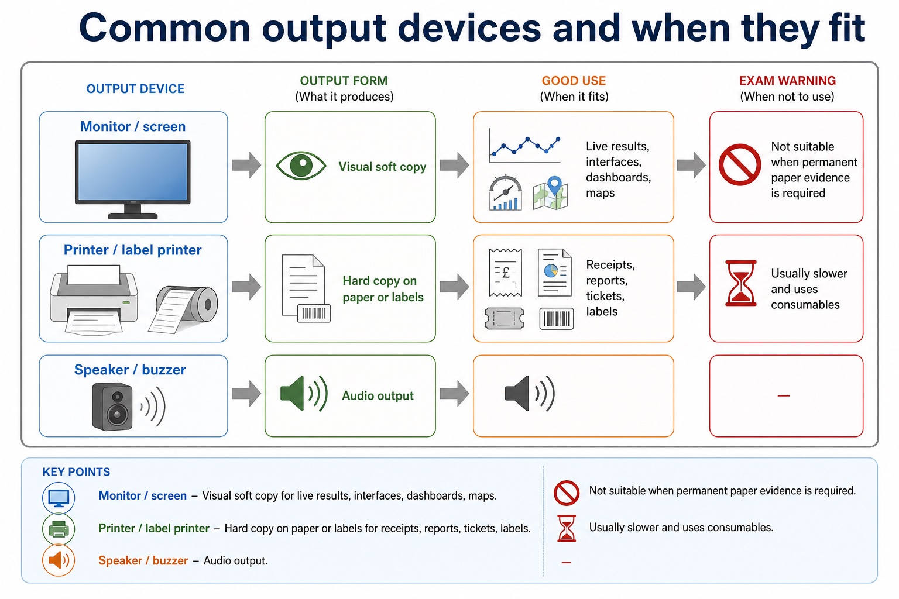
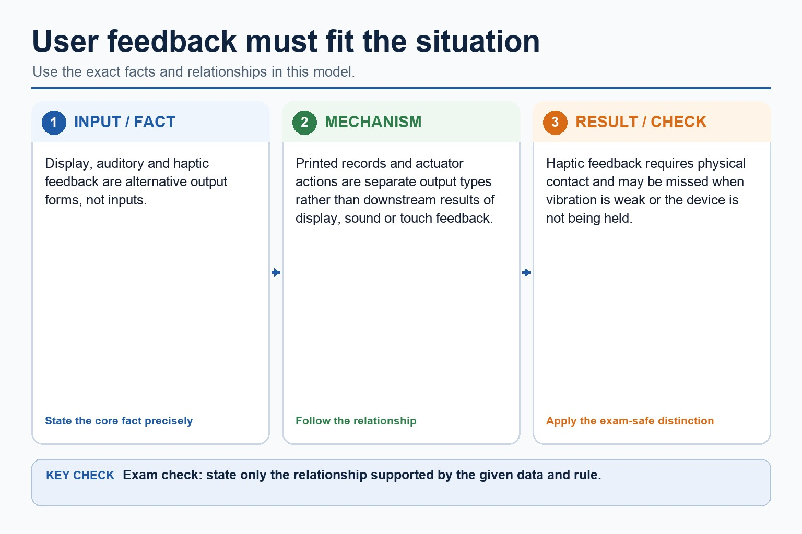

A microphone diaphragm vibrates with sound; a transducer converts the movement into an analogue electrical signal, which an ADC samples into digital values. A capacitive touchscreen detects a change in an electric field and calculates touch coordinates.
A VR headset displays a separate view to each eye and uses motion/orientation sensors to update the viewpoint. Low-latency tracking is needed so the displayed scene follows head movement.
A buffer temporarily holds data when producer and consumer operate at different speeds, reducing loss or interruption caused by the rate difference.
Required device overview: a laser printer uses an electrostatic drum, laser, toner and fuser; a 3D printer builds successive layers; a speaker converts an electrical signal into sound. An HDD or magnetic hard disk uses rotating magnetic platters, flash memory stores charge electronically, and an optical reader/writer uses a laser.
Worked example: Turn head in VR
Gyroscope/accelerometer readings report orientation; the processor calculates a new camera view; displays present updated left/right images, creating stereoscopic depth.
Core syllabus practice
Microphone, touchscreen and VR headset operation: apply and assess
Targeted practice
1. What converts a microphone's analogue signal into digital samples?
Show answer
An analogue-to-digital converter (ADC).
2. What does a capacitive touchscreen detect?
Show answer
A change in capacitance/electric field at a touch location.
3. Why does a VR headset track head movement?
Show answer
To update the displayed viewpoint to match the user's orientation.
Exam-style question
4 marks
Describe how a microphone captures sound for storage in a computer.
Show MS
Answer
Guidance
Marks
sound waves vibrate a diaphragm
Do not accept that the microphone directly records binary without an analogue signal and conversion stage.
1
transducer converts vibration to an analogue electrical signal
1
ADC samples/measures the signal
1
sample values are encoded/stored as binary
1
Lesson 030 | 45 minutes | Paper 1 Section 3
Output is how the computer stops silently thinking and actually tells someone.
This lesson focuses on output devices and user feedback. You will learn how
to choose an output device for a scenario, explain the form of output, and
avoid vague answers such as "use a screen because it is good".
Describethe purpose of common output devices
Comparevisual, audio, printed and physical output
Justifyoutput choices using audience, environment, permanence and urgency
processed data -> output device -> user/action
A warning nobody can notice is not feedback; it is just decoration with extra electricity.
Why this matters
Hardware questions often require justification. "Speaker" is not enough; "speaker because the warning must be noticed without looking at a screen" is exam-shaped.
Common error
An actuator is an output device when it causes physical movement or action. It does not display information like a monitor.
Warm-up hook
A car detects an obstacle. It beeps, flashes a dashboard warning, vibrates the steering wheel and may apply the brakes. Which outputs are being used?
Click one output. The useful exam habit is linking output form to user need or physical action.
Knowledge point 1
What output devices do
1. PresentOutput devices present processed data to a user, such as text, images or sound.2. RecordSome output creates a physical record, such as a printout or receipt.3. ActActuators convert computer output into physical movement or control.
What output devices do: source-grounded visual explanation.
Lesson fact: 1. Present Output devices present processed data to a user, such as text, images or sound.
Lesson fact: 2. Record Some output creates a physical record, such as a printout or receipt.
Lesson fact: 3. Act Actuators convert computer output into physical movement or control.
Knowledge point 2
Common output devices and when they fit
Device
Output form
Good use
Exam warning
Monitor / screen
Visual soft copy
Live results, interfaces, dashboards, maps
Not suitable when permanent paper evidence is required
Printer
Hard copy on paper or labels
Receipts, reports, tickets, labels
Usually slower and uses consumables
Speaker / buzzer
Audio output
Warnings, accessibility, spoken instructions
May be unsuitable in noisy or quiet environments
Projector
Large visual display
Classroom, meeting room, large audience
Needs suitable surface and lighting conditions
Actuator
Physical movement/action
Opening valves, moving motors, applying brakes
It outputs action, not information for reading
Common output devices and when they fit

Common output devices and when they fit: source-grounded visual explanation.
Lesson fact: Output form
Lesson fact: Good use
Lesson fact: Exam warning
Lesson fact: Monitor / screen
Lesson fact: Visual soft copy
Lesson fact: Live results, interfaces, dashboards, maps
Lesson fact: Not suitable when permanent paper evidence is required
Lesson fact: Hard copy on paper or labels
Lesson fact: Receipts, reports, tickets, labels
Lesson fact: Usually slower and uses consumables
Lesson fact: Speaker / buzzer
Lesson fact: Audio output
Knowledge point 3
User feedback must fit the situation
Feedback type
Strength
Limitation
Visual
Detailed information, menus, diagrams, maps.
User must be able to see and look at the display.
Audio
Immediate warning without needing to look.
Can be missed in noise or disruptive in quiet spaces.
Printed
Permanent portable evidence.
Not ideal for rapidly changing information.
Physical action
Controls the real world automatically.
Needs safety controls because it changes the environment.
User feedback must fit the situation

User feedback must fit the situation: source-grounded visual explanation.
Lesson fact: Display, auditory and haptic feedback are alternative output forms, not inputs.
Lesson fact: Printed records and actuator actions are separate output types rather than downstream results of display, sound or touch feedback.
Lesson fact: Haptic feedback requires physical contact and may be missed when vibration is weak or the device is not being held.
Interactive tool
Choose the output device
Worked examples
From device name to scenario-linked output
Your turn
Practice with instant checking
Mistake debugging
Fix the weak output answer
"Use a printer because it is better."
This is too vague. A stronger answer is: use a printer because it produces a hard copy receipt that the customer can keep as evidence of the transaction.
"A sensor is an output device because it tells the system the temperature."
A sensor is an input device because it captures data from the environment. An actuator is an output device when it opens a vent or turns a motor in response.
Exam-style questions
Questions with expandable MS
Attempt first, then expand the mark scheme. Credit depends on output form and scenario-linked suitability.
Summary
Output choices depend on who needs the result
Output devicePresents processed data or causes a physical action.
ScreenBest for changing visual information and interaction.
PrinterBest for permanent hard copy output.
SpeakerBest for alerts or information that can be heard.
ActuatorBest when the system must physically control something.
SuitabilityLink output form to urgency, permanence, audience and environment.
Homework
Clear tasks
Create a table of five output devices, the form of output, and one suitable scenario.
Write a 4-mark answer explaining why a printer is suitable for receipts but not ideal for live traffic directions.
Choose two output methods for a hospital alarm system and justify each choice.
Write one sentence explaining why an actuator is an output device.
Device table: include monitor -> visual soft copy; printer -> hard copy; speaker -> audio; projector -> large visual output; actuator -> physical action.
Printer comparison: receipts need permanent paper evidence; traffic directions change quickly and need live visual/audio feedback.
Hospital alarm: combine audio warning for urgency with visual display/light for location or message detail.
Actuator: it converts a computer output signal into physical movement or control.